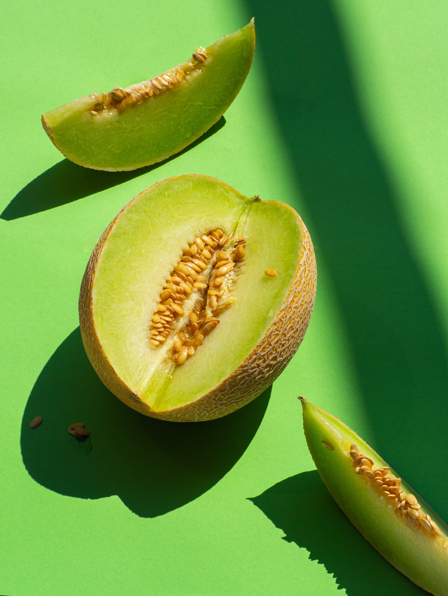

Watermelonüçâ
the large fruit of a plant of the gourd family, with smooth green skin, red pulp, and watery juice.
Honeydew Melonüçà
a melon of a variety with smooth pale skin and sweet green flesh.
Orange-Fleshed Honeydewüçä
its skin is white to pale yellow-green. Its salmon hued flesh however is more like that of a cantaloupe and is firm yet juicy offering a honey sweet melon flavor.